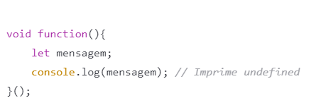

Variáveis
Var
No caso da palavra-chave var, além da variável ser içada (hoisting) ela é automaticamente inicializada com o valor undefined (caso não seja atribuído nenhum outro valor). Ok, mas qual é o impacto que temos quando fazemos esse tipo de uso? Imagine que nosso código contenha muitas linhas e que sua complexidade não seja algo tão trivial de compreender. Às vezes, queremos declarar variáveis que serão utilizadas apenas dentro de um pequeno trecho do nosso código. Ter que lidar com o escopo de função das variáveis declaradas com var (escopo abrangente) pode confundir a cabeça até de programadores mais experientes. Sabendo das "complicações" que as variáveis declaradas com var podem causar, o que podemos fazer para evitá-las?
Let
Foi pensando em trazer o escopo de bloco (tão conhecido em outras linguagens) que o ECMAScript 6 destinou-se a disponibilizar essa mesma flexibilidade (e uniformidade) para a linguagem. Através da palavra-chave let podemos declarar variáveis com escopo de bloco.
Const
Supondo que temos uma variável que queremos garantir sua inicialização com um determinado valor, como podemos fazer isso no JavaScript sem causar uma inicialização default com undefined? Para termos esse tipo de comportamento em uma variável no JavaScript, podemos declarar constantes por meio da palavra-chave const. O código acima gera um Uncaught TypeError: Assignment to constant variable, pois o comportamento fundamental de uma constante é que uma vez atribuído um valor a ela, este não pode ser alterado. Assim como as variáveis declaradas com a palavra-chave let, constantes também tem escopo de bloco.